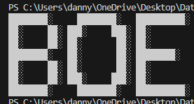
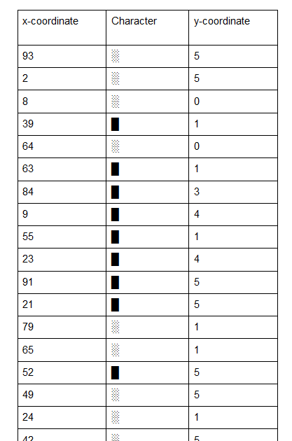
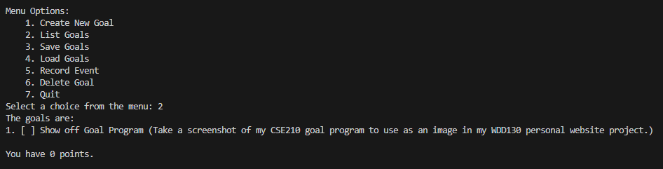

Projects
Here are some of what I consider to be my most impressive coding projects, If you have any questions about any of them, feel free to reach out!
Message Decoder/Encoder
This is a project that I created as part of a job application. It is a web scraper designed to decode a message from a table of values, where the table has shuffled rows with 3 columns each, an X coordinate, a Y coordinate, and a unicode character. The decoder reads through the list, and prints out a complete grid, with every character in its correct spot according to the given coordinates. If the given input was valid, the final grid should spell out a word! I enjoyed this project so much that I reverse engineered an encoder to create these tables of values myself, just for fun.
 CSE210 Goal Program
This was the final project for CSE210, a class I took last semester. It is written in C#. The program is a “goal manager” which allows the user to gamify their goals by keeping track of a cumulative number of points. The user can set a number of points to be awarded for every chosen goal, and will be awarded those points when the goal is marked as completed.
Godot RPG
Godot RPG
This is a personal project that has been a WIP for a few months. It was my first foray into game development. It’s a simple 2d RPG developed in the GODOT game engine. As it was my first attempt at game dev, this was almost entirely created by following this youtube tutorial.